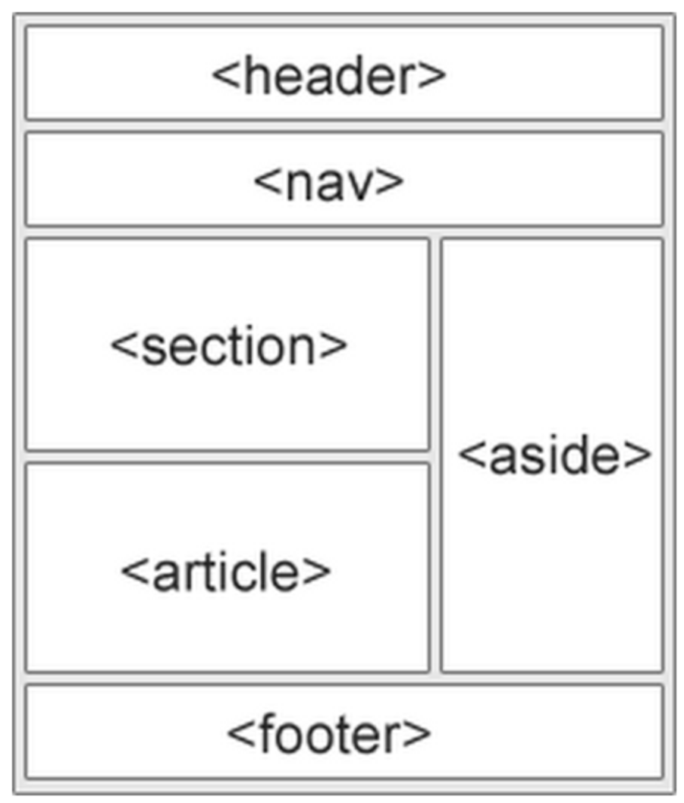
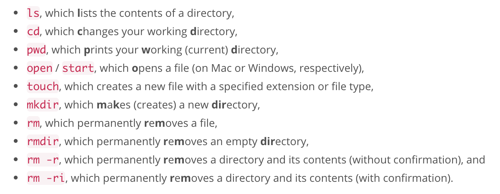
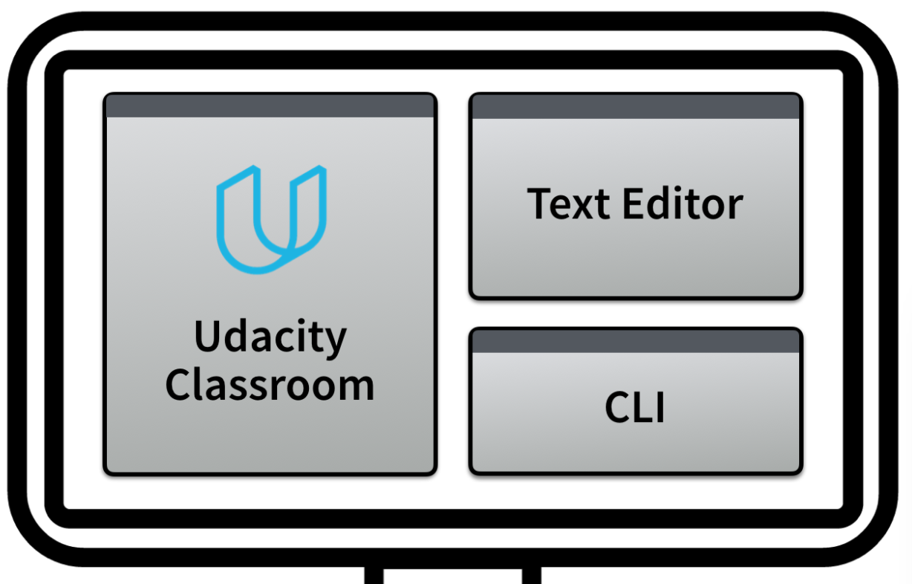
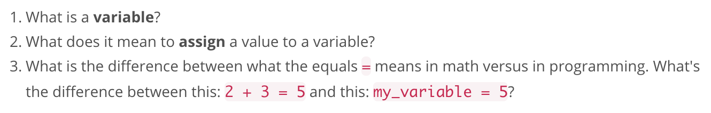
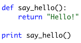
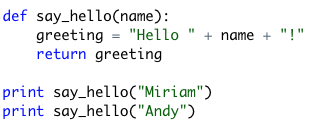
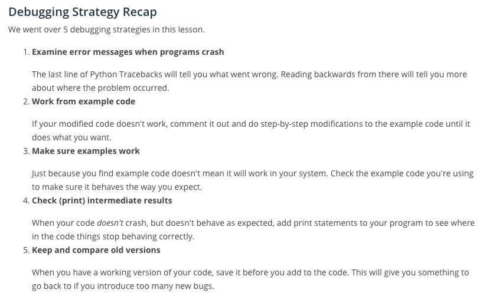

Procedural Thinking
Procedural thinking involves creating perfectly clear and unambiguous instructions for a computer to follow.
It may be easy to tell a person how to sort a deck of cards, but getting a computer to do that requires more thought. But once you've learned to think this way you'll find that computers can do it much faster.
Abstract Thinking
Abstract thinking means finding similarity, or as programmers would say, generality amongst seemingly different things.
In this Nanodegree program you will visit hundreds of Udacity web pages. It would be impractical for a programmer to specifically program each of these pages individually. The Udacity programmers used the power of what's called abstraction to avoid unnecessary repetition of work.
Systems Thinking
Systems thinking happens when you break a big problem down into smaller pieces. Programmers do this when they create a plan (often on paper) for how a program will work. It involves big-picture thinking and decision-making about a problem and how different pieces of a program can work together to solve it. If this is unclear now, don't worry! You'll understand what this means much more clearly by the end of the Nanodegree program.
Technological Thinking
"Technological empathy" comes in many forms. For example, computer empathy is the ability to understand what a computer is, how it works, and what it's good and bad at doing.
A computer is a tool, as are the programs we use and the programming languages used to write them. It's almost impossible to program anything substantial without a basic understanding of how these tools work.
Debugging
Debugging is a systematic process of relentlessly identifying the cause of a computer program that doesn't work.
When a program doesn't work, it's because there is a mistake (also known as a "bug") somewhere in the computer code. Since these mistakes are an unavoidable part of programming, every good programmer has a system for fixing them and that system usually looks something like this:
Basics of the web
The web consists of plain text, HTML (Hypertext Markup Language), images, music, videos, and much more! Hyperlinks connect pages together and are what make the world wide web, "web like."
Components of the web
HTML Document Basics
HTML and CSS are both "languages," although some will debate this. HTML dictates the structure of a web page using tags. CSS controls the styling of a web page. A popular term used by programmers is "DOM" or Document Object Model. The DOM refers to the tree structure of a page that can be viewied on any page using your browser's developer tools. This wikipedia page also provides additional information around tree structure.
Boxes Everywhere!
It is crucial to remember that every page consists of boxes that are formatted using CSS. Think of any web page as box inception!
CSS - Cascading Style Sheets
"Cascading" is the key word because the rules that you create with CSS code will always cascade down to the most granular level and apply the coded formatting.
Order Matters
CSS Selectors
This website provides a great guide on how CSS selectors opperate: CSS-Tricks
CSS Reference / Documentation
Something I struggled with after Colt's course was not knowing where to begin with CSS. I knew how it operated but not all the attributes and nuances. This MDN CSS documentation is the best place to start AND end. Everything I need will be included somewhere within.
The Box Model
Here is a link to a good reference describing the box model.
Note: the size of element equals sum of border, padding, and content widths.
Box Sizing and Positioning
Positinoing can be handled many different ways. It is considered one of the most complicated aspects of CSS. One technique we covered is "flexbox." This link provides a great summary of flexbox.
Additionally, getting the size of a box right can be difficult. Here are two techniques I can use:
Note: Remember that divs are block elements and that block elements take up the width of a page by default. By adding display: flex code to your css div elements will override this feature and divs will appear next to each other.
Code, Test, Refine
Verifying HTML and CSS
Some References!
HTML5 Semantic Tags
Summary of commands
Source: Udacity - Summary — Running Code from the Command Line
Other Command Line Notes
When you're working outside of a specific directory and want to create/add multiple files you can do so by writing the path then separating the names with spaces and file types.
For example:
~/Desktop $ touch animals/marsupials/kangaroo.txt animals/cloven_hoofed_animals/giraffe.txt
Python and Command Line
Workspace, Workspace, Workspace!
Python Final Note
Python, like many languages, is an "interpreter" for the computer. We write a program in Python. Python then interprets it and relays the equivalent machine code to the computer so it can perform the action.
Intro to Variables
Keep the following three items in mind when learning about variables...
Variables can vary / Assignment
Variable assignment is pretty straightforward in Python - you can reassign at will. Keep in mind that any variables that may have included the reassigned variable will also need to be "refreshed" in the program, otherwise the old value will still exist.
Strings
Not much to really make note of.. Just remember that if you're having a issue to google. You will most likely find your solution + documentation fairly quickly. Probably a good idea to start a "Frequently" used functions and method list for each language!
Overview of Functions
Variables are considered one of the most important ideas in programming.
Functions are one of the most important ideas.
Functions, also known as "procedures", look like this:
 Functions / Procedures
We must understand the following aboud functions:
Important video: Udacity - Using Procedures . Keep this specific question in minde: How do functions take input and produce output and what role do the keywords def and return have to do with this process?
Using a function: < function > ( < input1 >, < input2 >, ... )
Inputs are also referred to as operands, arguments, and parameters.
Basic order of operations for a defined function:
Mentor Question: Hey david, do you happen to know a general rule that clearly defines the differences between a method and a function?
Mentor Answer: A method is just how a function that belongs to a class is called usually. Some languages like Pascal or Basic differentiate between "functions" and "procedures", where a procedure or subprocedure (or subroutine) is a function that returns nothing: it just changes some values, or prints something, and the like. But it is not common in modern languages. Anyway, people tend to mix up the nomenclature and call a function a method and viceversa. It is not a big thing in my opinion.
Calling A Function
"Calling" a function just means using it. You do this by writing:
Debugging
Adding Comments
Printing "Hello" does not require comments.
Explain expected inputs, outputs, and what function does.
Code can become confusing if changes are made and corresponding updates are not made to comments.
Short and explain most important details of your code. If you find yourself wriring long comments to clarify confusing parts of your code you may want to rethink approach. Generally, well written code will have sparse, concise, comments. Poorly written code will have to depend on comments!
Source: Udacity - Writing Comments
Understanding a Problem
A problem is defined by the possible inputs and the relationship between those inputs and desired outputs.
SOLUTION: INPUTS ---> PROCEDURE ---> OUTPUTS
Pythonista's Guide to All Problems in the Galaxy
TOPIC TITLE
CONTENT